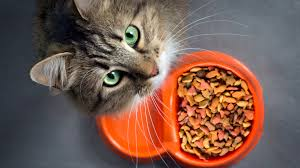

Kattmat
|  |
Kattmat är ett djurfoder avsett att konsumeras av katter. Eftersom katter är köttätare, är kommersiell kattmat oftast berikad med extra näringsämnen. En av de viktigaste är aminosyraderivatet taurin, då katter inte kan syntetisera substansen. Katter som matas endast med taurinfattig hundmat kan utveckla retinal degeneration som kan resultera i blindhet, till exempel.[1] Energibehovet för vuxna katter varierar mellan 60 och 70 kcal/kg kroppsvikt per dag för inaktiva katter till 80-90 kcal/kg kroppsvikt för aktiva katter. Kattungar behöver vid 5 veckors ålder 250kcal/kg k.v. Behovet minskar med åldern, till 100kcal/kg vid 30 veckor och tills katten nått en vuxens behov vid runt 50 veckor.[2] |